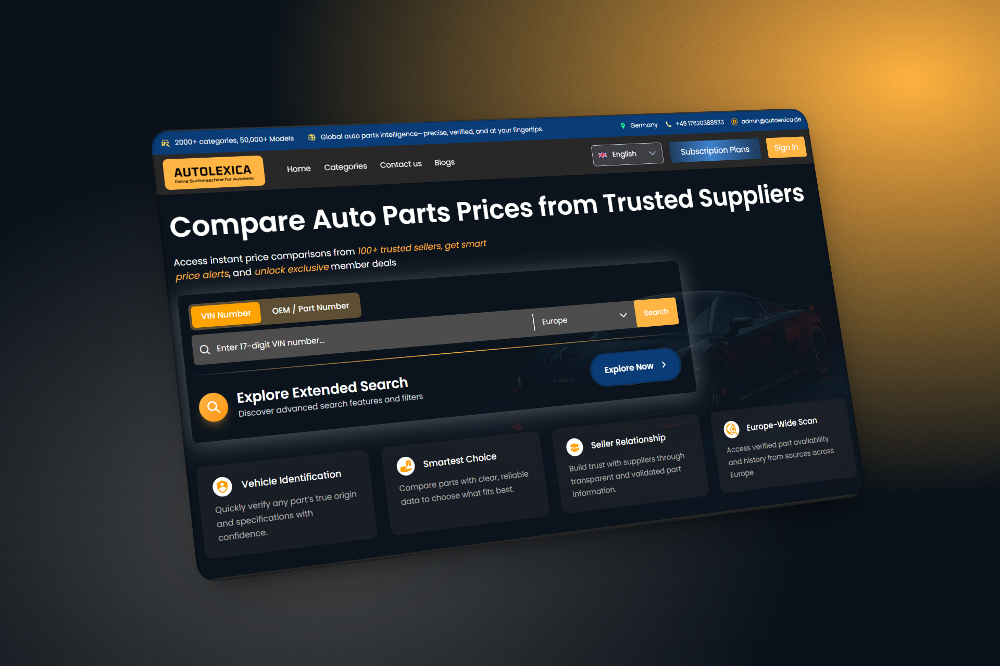
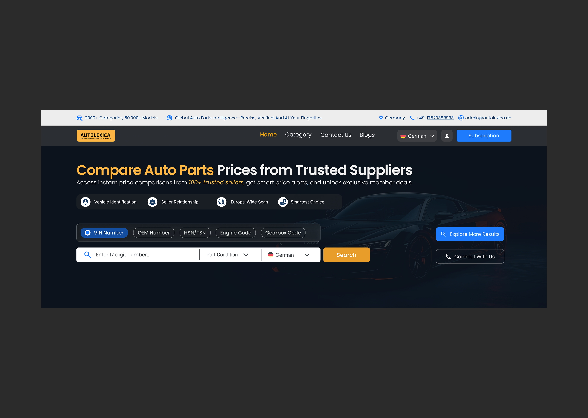
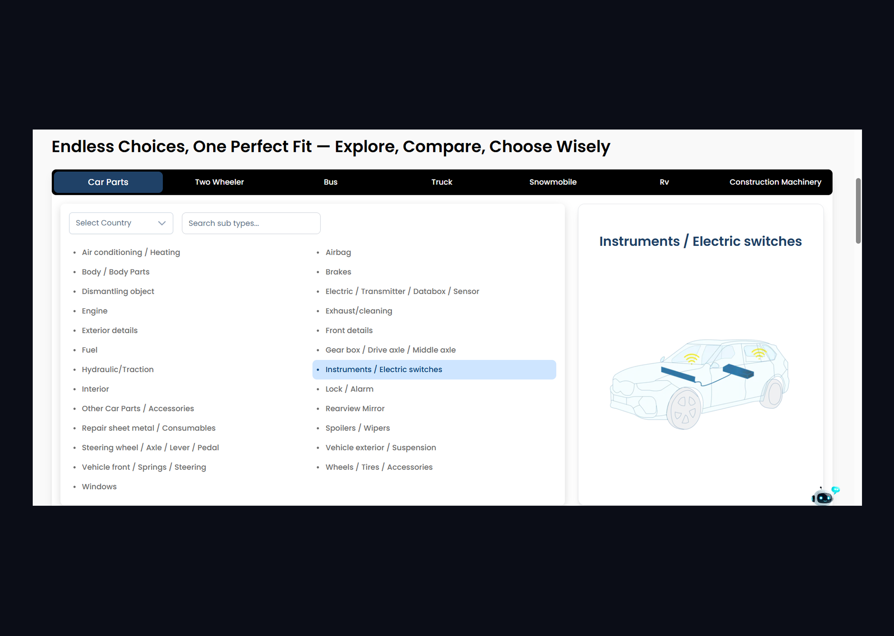

Autolexica — Auto Parts Discovery Platform
Simplifying complex, multi-variable vehicle components search by designing a validation-first discovery utility that minimizes cross-tab shopping.

Autolexica — platform overview, desktop view
Introduction
Autolexica is an intelligent auto-parts search and validation platform designed to simplify how users find compatible components. Unlike standard e-commerce shops, Autolexica does not directly handle sales logistics. Instead, it serves as a reliable connector, validation center, and discovery layer for vehicle parts.

📸 Context Photo — phone on workbench / real-world usageNew context — how users interact with Autolexica on mobile
The Problem
The European auto-parts landscape is highly fragmented, making part compatibility a constant challenge for average drivers and professional workshops alike. Users faced several key friction points:
- No Validation Trust: Users were never 100% sure if a part ordered online would fit their specific engine or model year.
- Multi-Tab Fatigue: Users had to cross-reference technical numbers (OEM codes, VINs, engine codes) across multiple OEM sites and aftermarket storefronts.
- Broken Compliance Loops: In regions like Germany, strict regulatory compliance data (e.g., Gutachten) was siloed and inaccessible during regular part searches.
- Cognitive Overload: Empty result states or massive grids of unvalidated search results led to instant user drop-off.
- Disconnected Supply Chain: Vendors and buyers are not aligned — OEM, aftermarket, and third-party inventories don't sync.
The Goal
Success Parameters
Create a structured, validation-first search experience that reduces multi-website searches, verifies compatibility using vehicle identifiers upfront, and provides fallback recommendations when exact matches are missing.
- Enable accurate part validation based on vehicle data
- Reduce multi-tab dependency to a single reliable platform
- Build a unified search experience across OEM, aftermarket, and third-party
- Simplify decision-making for non-expert users
- Create a bridge between fragmented suppliers and users
Research & Insights
Using Google Analytics 4 and Microsoft Clarity, we audited user behavior patterns during vehicle queries and conducted interviews with workshop managers. We discovered key insights:
Key Findings
1. Trust is the Primary Barrier: Users hesitate to complete transactions
because they fear the hassle of returning heavy auto parts. Validation must be displayed upfront.
2. Non-Linear Querying: A user may begin with a car model, switch to a VIN,
then search for an OEM number. The search bar must handle all inputs seamlessly.
3. "No Results" is Fatal: An empty search state resulted in an immediate exit.
Providing fallback options, direct support requests, or general categories is essential.
4. Users prefer guided systems over open-ended search flows.
The Solution
We designed a minimal, validation-first web app structure featuring a shift in the core experience:
Experience Shift
Before: search → guess → verify → return → retry
After: search → validate → decide
- Multi-Input Search: A unified input field that automatically parses and identifies VINs, OEM codes, gearbox identifiers, and engine numbers.
- Interactive Validation Layer: A visual compatibility checkmark showing "This fits your Saved Vehicle" or "Incompatible" dynamically.
- Smart Empty States: If an exact OEM part is unavailable, the UI presents secondary aftermarket alternatives and a fast "Request Part Info" button.
- Saved Vehicles Tray: A one-click toggle to select and apply active car parameters for ongoing part searches.
Unified search — VIN / OEM / model / engine code
Real-time compatibility check — "Fits your vehicle"

Heavy Vehicle — one-click switching

Visual categories for non-expert users
User Flow (Simplified)
End-to-end user flow — entry to validated part discovery
Design Decisions
- Multi-entry search → matches real, non-linear user behavior
- Validation-first UI → builds trust instantly before purchase decision
- Reduced clutter UI → lowers cognitive load at every step
- No dead ends → always surface alternatives or support — zero empty-state exits
- Platform-controlled vendors → ensures quality and removes marketplace chaos
.png)
Early lo-fi wireframe — exploration phase
Prototype Walkthrough
Product Outcomes
Within three months of releasing the validation-first beta:

GA4 & Clarity — search-to-result drop-off reduction
Key Learnings
Designing for complex B2B/B2C ecosystems taught me that UX designers must look beyond interface layouts. Understanding how APIs parse queries and how databases structure product relationships is critical. Designing a simple user journey requires aligning design decisions with technical constraints.
- Product Thinking: Designing for complex ecosystems, not just screens — solving behavioral problems, not just UI problems
- Technical Understanding: User tracking via GA4, behavior insights via Clarity, basics of API network inspection and data flow
- Collaboration: Stakeholder communication and translating business + tech constraints into design decisions
- Asking the Right Questions: The biggest impact came from identifying that trust — not discoverability — was the real barrier
Keep Exploring
Sahelo — Auto Parts E-Commerce
A complete UX redesign centered on structured discovery, navigation clarity, and delivery transparency.
View Sahelo Project